Starting point of loop in a Linked List
Problem Statement: Given the head of a linked list that may contain a cycle, return the starting point of that cycle. If there is no cycle in the linked list return null.
Examples
Input: LL: 1 2 3 4 5 Output: 3 Explanation: This linked list contains a loop of size 3 starting at node with value 3.
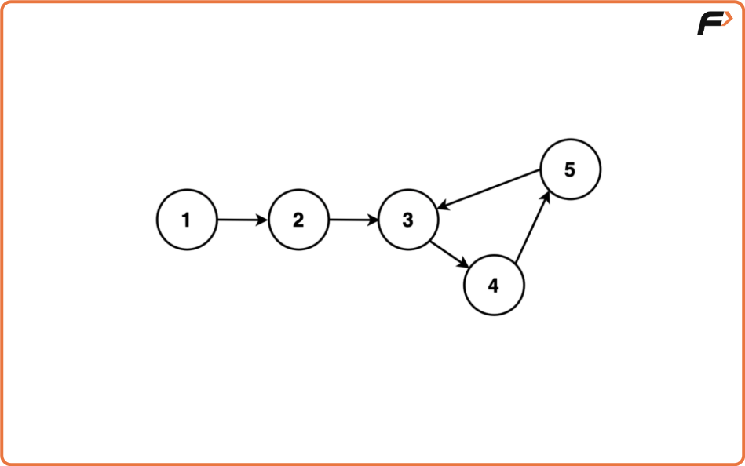
Input: LL: 1 -> 2 -> 3 -> 4 -> 9 -> 9 Output:NULL Explanation: This linked list does not contain a loop hence has no starting point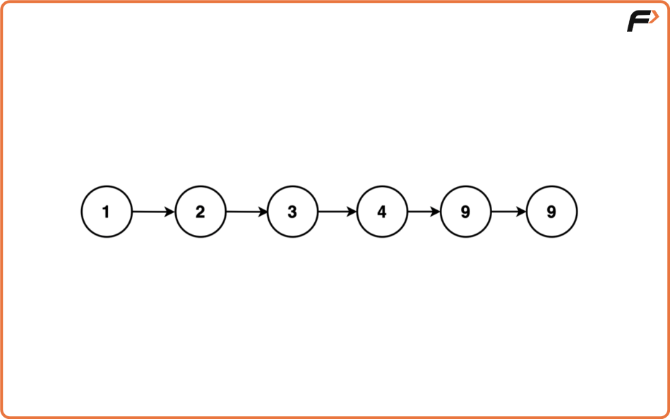
Disclaimer: Here is the practice link to help you assess your knowledge better. It's highly recommend trying to solve it before looking at the solution.
Brute Force Approach
Algorithm
- Traverse through the linked list by assigning a temporary node to the head and moving to the next node repeatedly until reaching null.
- While traversing, keep a record of visited nodes using a map data structure.
- Storing the entire node in the map is necessary to differentiate between nodes with the same value but different positions, ensuring proper detection of cycles instead of just duplicates.
- If a node already exists in the map, this confirms a loop, and we return that node as the starting point of the loop.
- If the traversal reaches the end of the list (null), it means no loop exists, so return null.
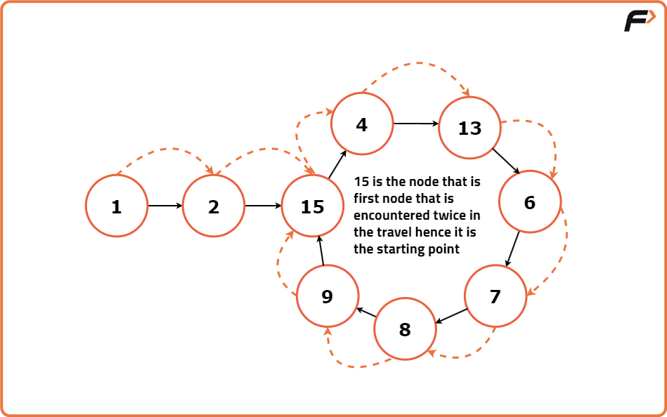
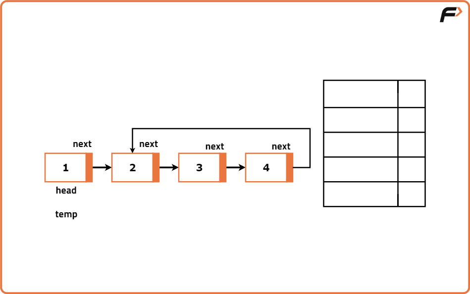
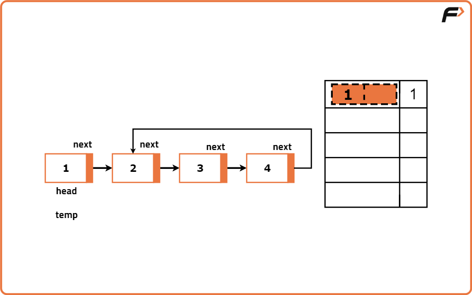
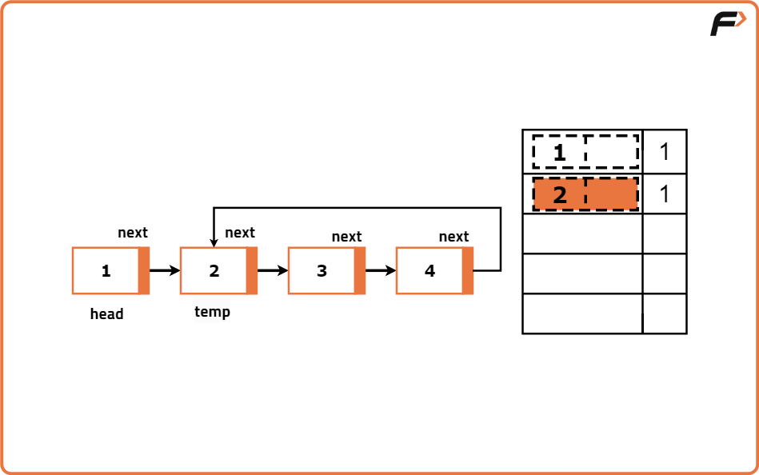
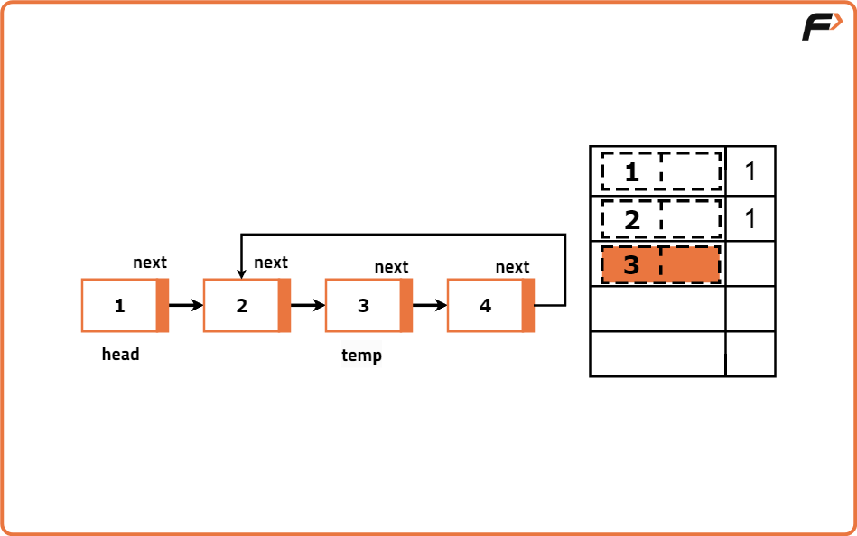
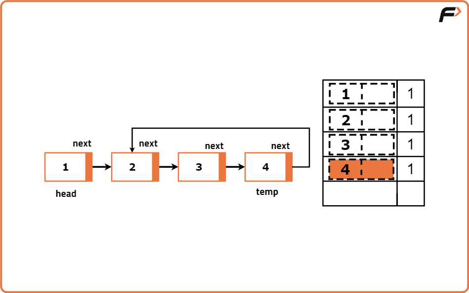
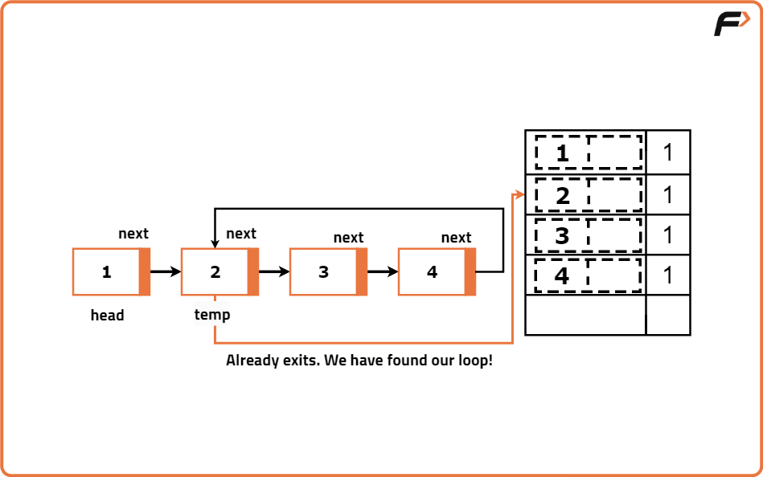
Code
#include <bits/stdc++.h>
using namespace std;
class ListNode {
public:
int val;
ListNode* next;
ListNode(int x) {
val = x;
next = NULL;
}
};
class Solution {
public:
// Function to detect start of loop using Hash Map
ListNode* detectCycle(ListNode* head) {
// Create a map to store visited nodes
unordered_set<ListNode*> visited;
// Start traversing from head
while (head != NULL) {
// If current node is already in set, it's the start of loop
if (visited.find(head) != visited.end()) {
return head;
}
// Otherwise, insert current node into set
visited.insert(head);
// Move to the next node
head = head->next;
}
// If loop not found, return NULL
return NULL;
}
};
// Driver code
int main() {
// Creating nodes
ListNode* head = new ListNode(3);
head->next = new ListNode(2);
head->next->next = new ListNode(0);
head->next->next->next = new ListNode(-4);
// Creating a cycle (tail connects to node index 1)
head->next->next->next->next = head->next;
Solution obj;
ListNode* startNode = obj.detectCycle(head);
if (startNode)
cout << "Cycle starts at node with value: " << startNode->val << endl;
else
cout << "No cycle found." << endl;
return 0;
}
Complexity Analysis
Time Complexity: O(N) where N is the number of nodes in the linked list. Each node is visited only once during traversal. Hashing allows O(1) lookup to check for previously visited nodes.
Space Complexity: O(N) due to the additional hash set used to store visited nodes. In the worst case (no cycle), all N nodes will be stored in the hash set.
Optimal Approach
Algorithm
The Tortoise and Hare approach has been discussed in this article. The key insight is that when the slow and fast pointers meet inside the loop, the distance travelled by each pointer can be used to calculate the starting point of the loop.
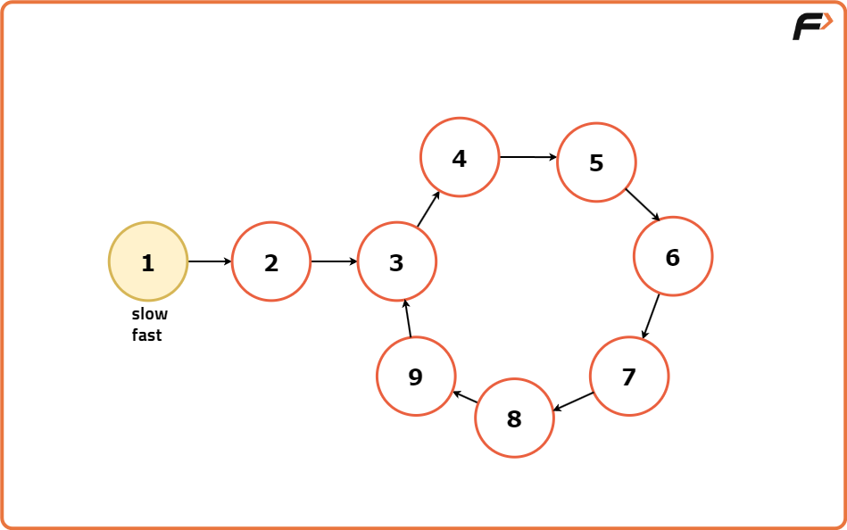
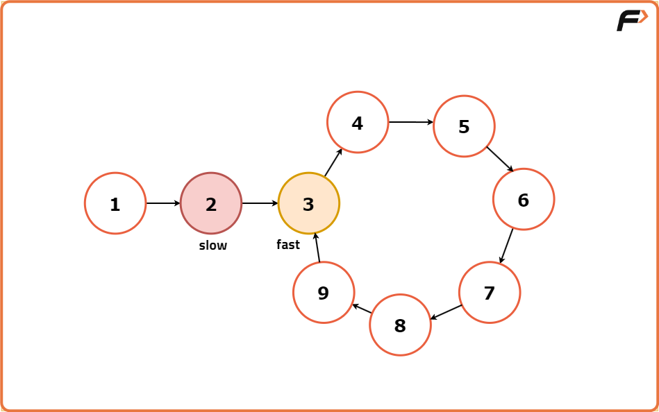
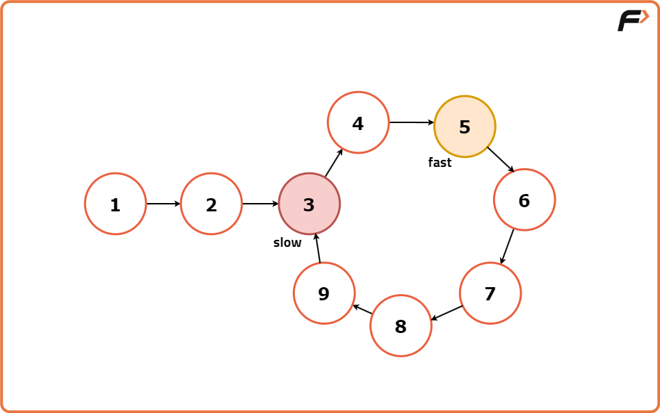
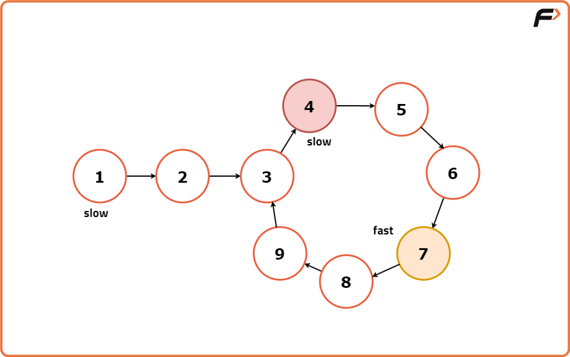
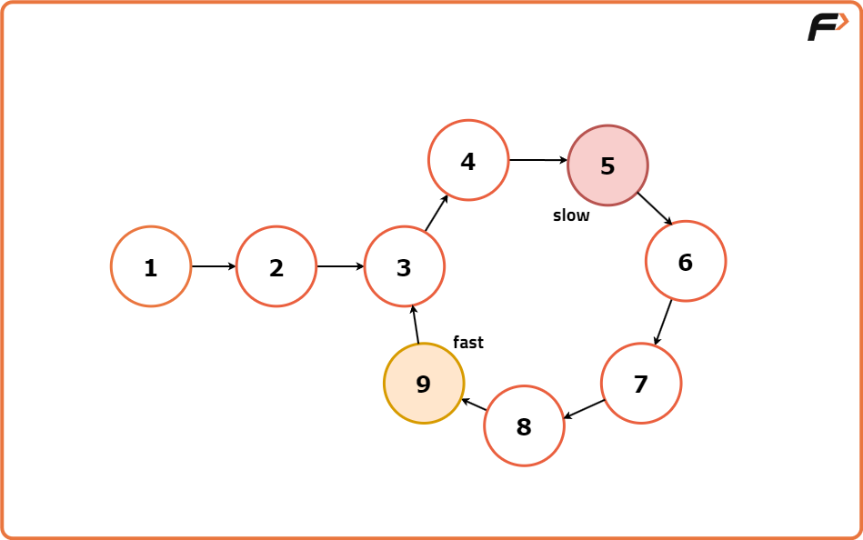
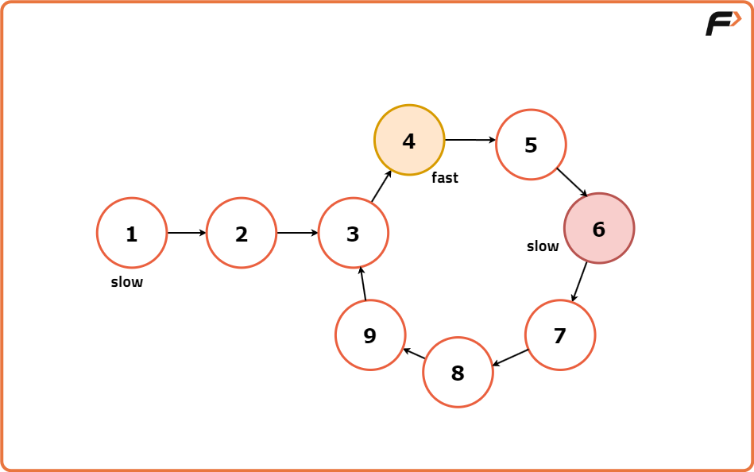
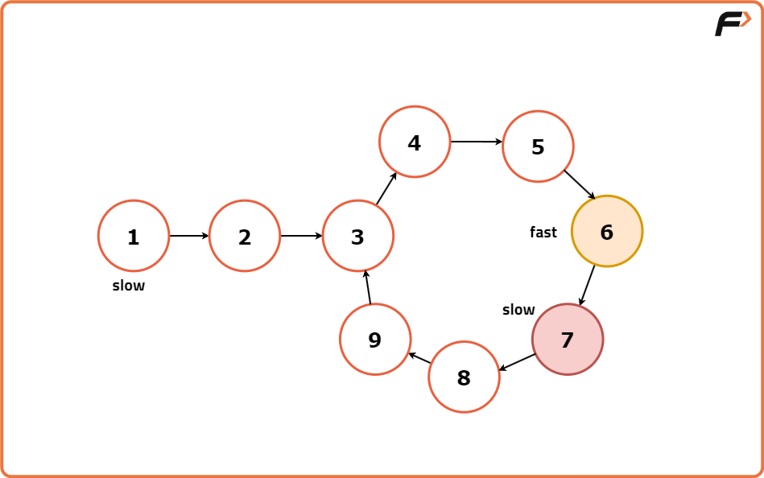
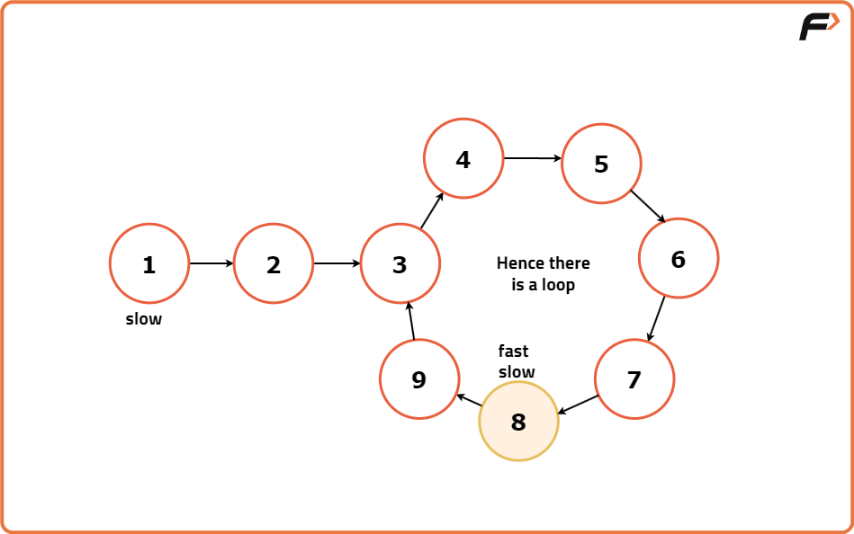
- Initialise two pointers, `slow` and `fast`, to the head of the linked list. `slow` will advance one step at a time, while `fast` will advance two steps at a time. These pointers will move simultaneously.
- Traverse the linked list with the `slow` and `fast` pointers. While traversing, repeatedly move `slow` one step and `fast` two steps at a time.
- Continue this traversal until one of the following conditions is met:
- `fast` or `fast.next` reaches the end of the linked list (i.e., becomes null). In this case, there is no loop in the linked list, and the algorithm terminates by returning null.
- `fast` and `slow` pointers meet at the same node. This indicates the presence of a loop in the linked list.
- Reset the `slow` pointer to the head of the linked list. Move `fast` and `slow` one step at a time until they meet again. The point where they meet again is the starting point of the loop.
You may be curious about the proof for this algorithm, and it hinges on the idea that the point where the slow and fast pointers converge can be leveraged to determine the starting point of the loop.
In the "tortoise and hare" algorithm for detecting loops in a linked list, when the slow pointer (tortoise) reaches the starting point of the loop, the fast pointer (hare) is positioned at a point that is twice the distance travelled by the slow pointer. This is because the hare moves at double the speed of the tortoise.
If slow has travelled distance L1 then fast has travelled 2 x L1. Now that slow and fast have entered the loop, the distance fast will have to cover to catch up to slow is the total length of loop minus L1. Let this distance be d. Distance travelled by slow = L1 Distance travelled by fast = 2 * L1 Total length of loop = L1 + d
In this configuration, the fast pointer advances toward the slow pointer with two jumps per step, while the slow pointer moves away with one jump per step. As a result, the gap between them decreases by 1 with each step. Given that the initial gap is d, it takes exactly d steps for them to meet.
Total length of loop = L1 + d Distance between slow and fast = d
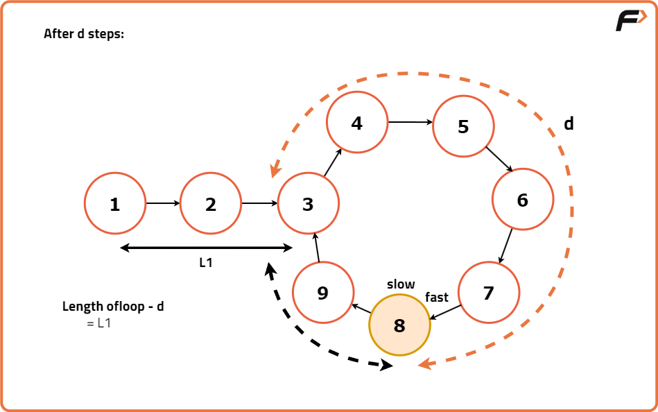
During these d steps, the slow pointer effectively travels d steps from the starting point within the loop and fast travels 2 x d and they meet at a specific point. Based on our previous calculations, the total length of the loop is L1 + d. And since the distance covered by the slow pointer within the loop is d, the remaining distance within the loop is equal to L1.
Therefore, it is proven that the distance between the starting point of the loop and the point where the two pointers meet is indeed equal to the distance between the starting point and head of the linked list.
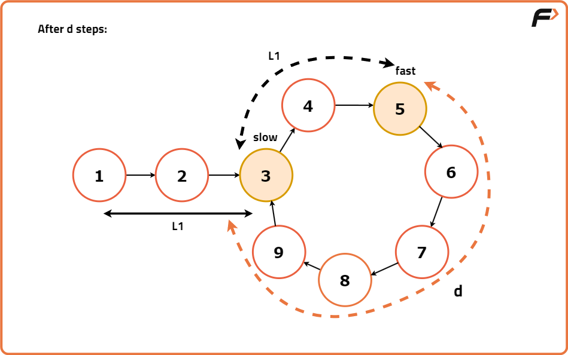
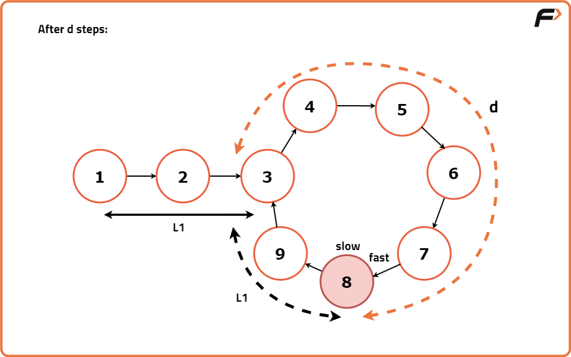
Code
#include <bits/stdc++.h>
using namespace std;
class ListNode {
public:
int val;
ListNode* next;
ListNode(int x) {
val = x;
next = NULL;
}
};
class Solution {
public:
// Function to detect the starting point of the loop using Floyd’s algorithm
ListNode* detectCycle(ListNode* head) {
// Initialize slow and fast pointers
ListNode* slow = head;
ListNode* fast = head;
// Traverse until fast and fast->next are not null
while (fast != NULL && fast->next != NULL) {
// Move slow by one step
slow = slow->next;
// Move fast by two steps
fast = fast->next->next;
// If they meet, loop is detected
if (slow == fast) {
// Reset slow to head
slow = head;
// Move both one step at a time to find starting point
while (slow != fast) {
slow = slow->next;
fast = fast->next;
}
// Return the start node of the loop
return slow;
}
}
// If no loop found, return NULL
return NULL;
}
};
// Driver code
int main() {
// Create nodes
ListNode* head = new ListNode(3);
head->next = new ListNode(2);
head->next->next = new ListNode(0);
head->next->next->next = new ListNode(-4);
// Create a cycle: connect tail to index 1 node (value 2)
head->next->next->next->next = head->next;
Solution obj;
ListNode* result = obj.detectCycle(head);
if (result != NULL)
cout << "Cycle starts at node with value: " << result->val << endl;
else
cout << "No cycle found." << endl;
return 0;
}
Complexity Analysis
Time Complexity: O(N) where N is the number of nodes in the linked list. In the worst case, we traverse the entire list once with the slow and fast pointers, and then again to find the entry point of the loop.
Space Complexity: O(1) constant extra space. No additional data structures are used, only two pointers.